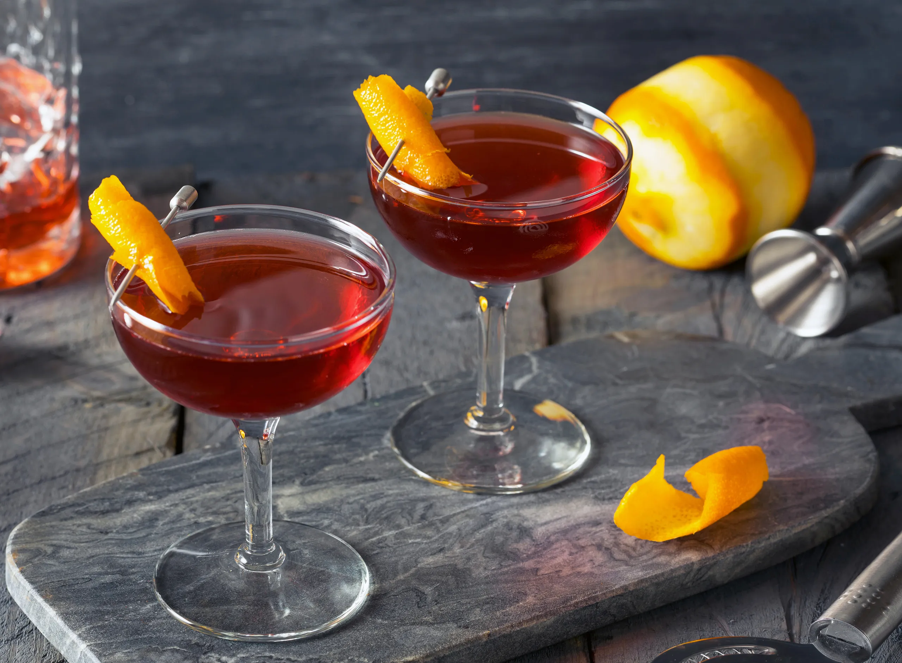
Inside Oaklawn
A look at
the evening.
Food, rooms and drinks. No staged story required.
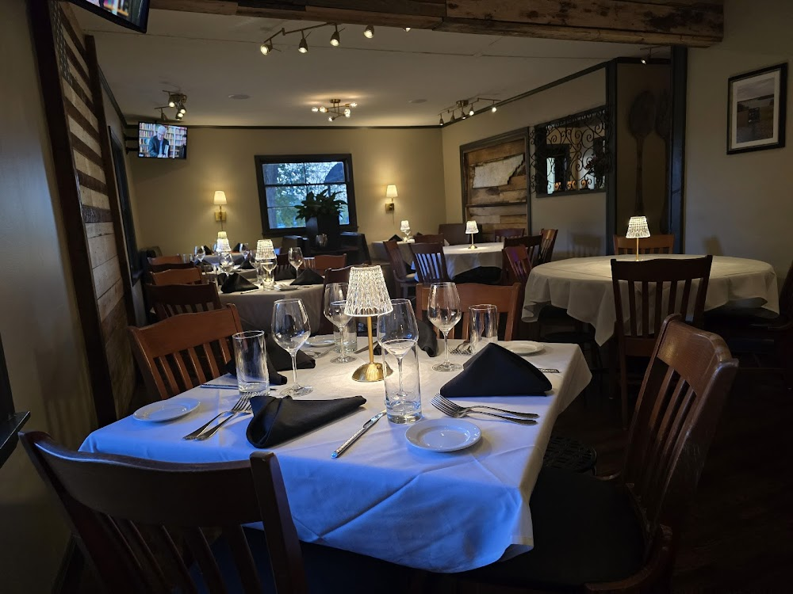
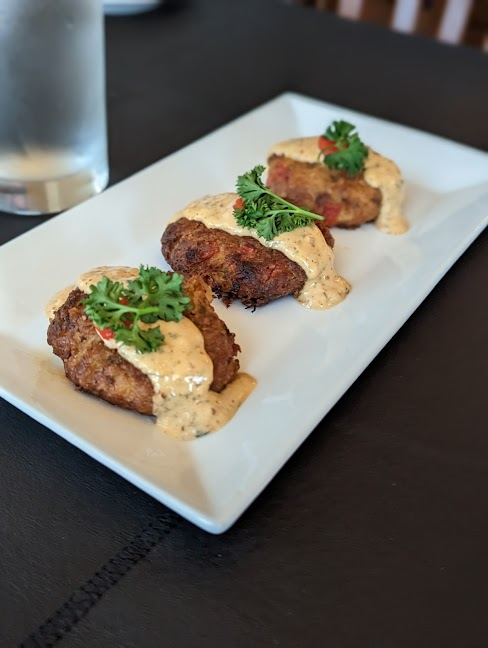
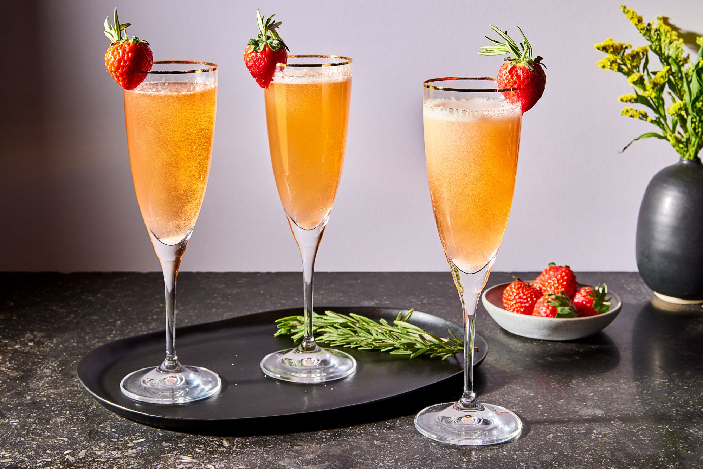
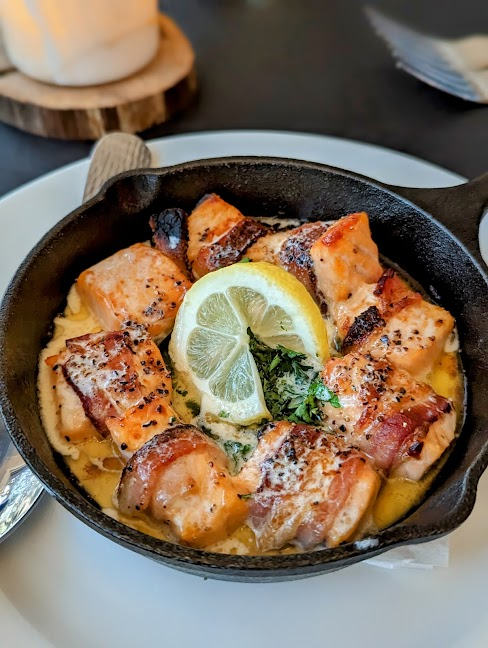

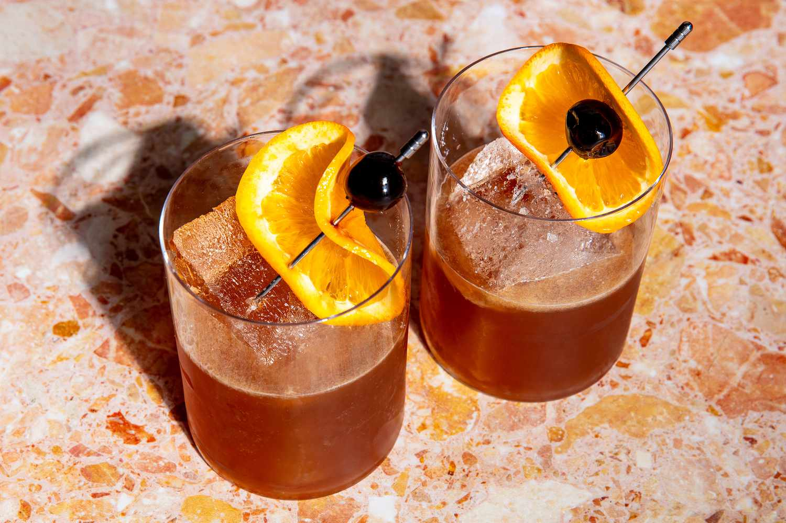
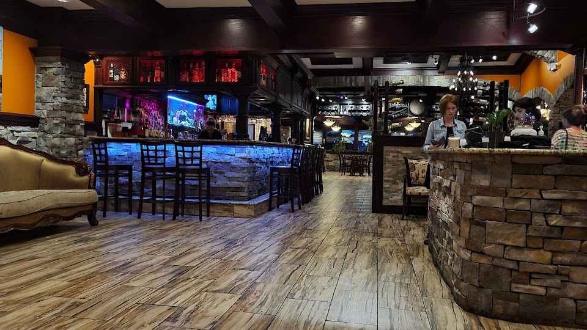
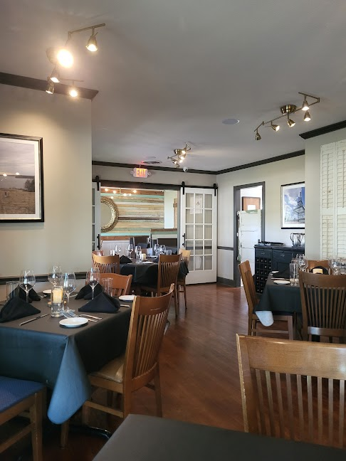
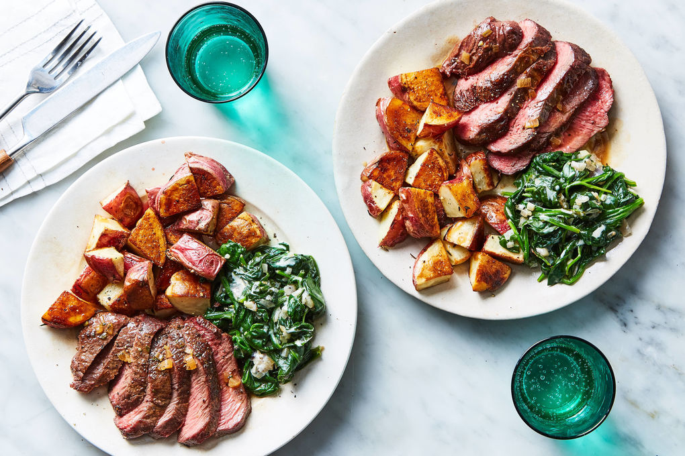
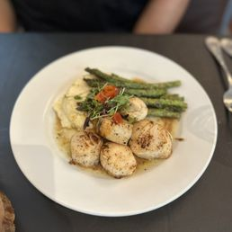
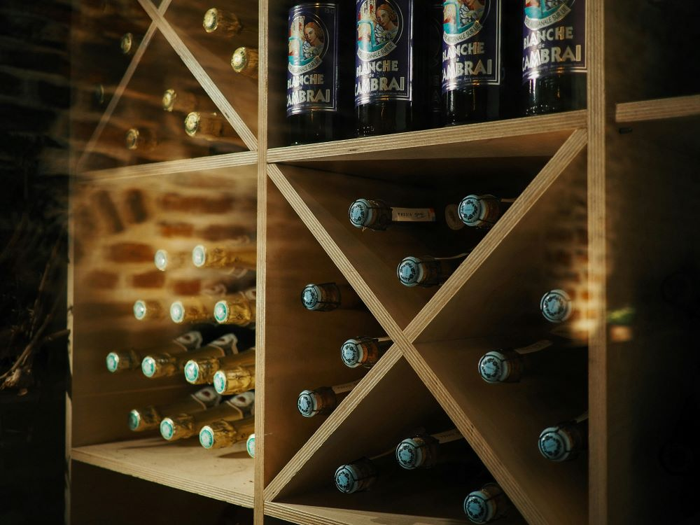

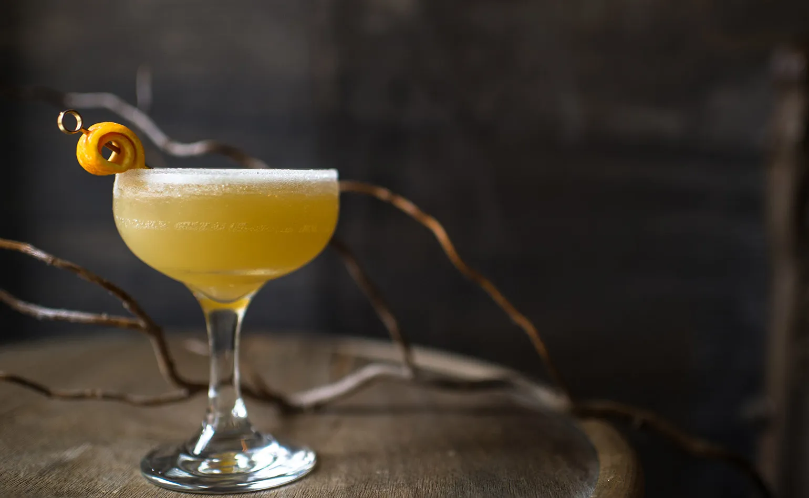
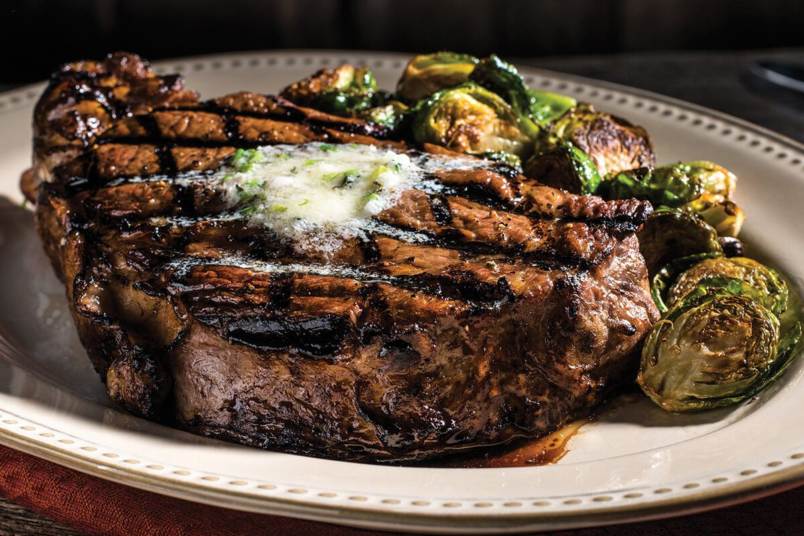
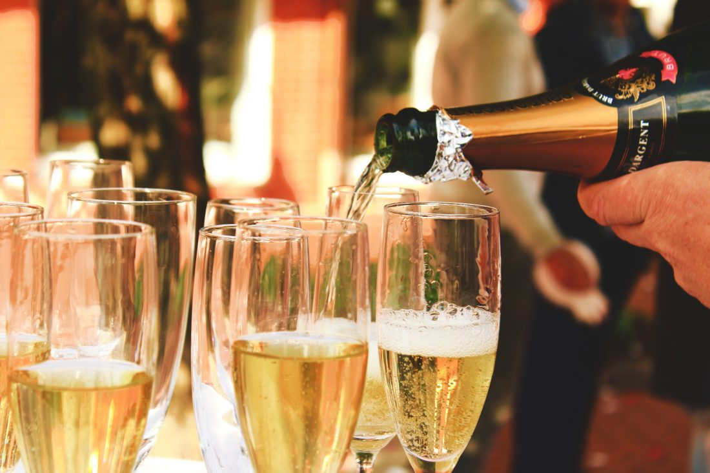
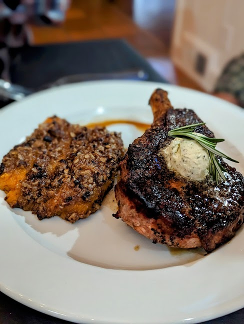


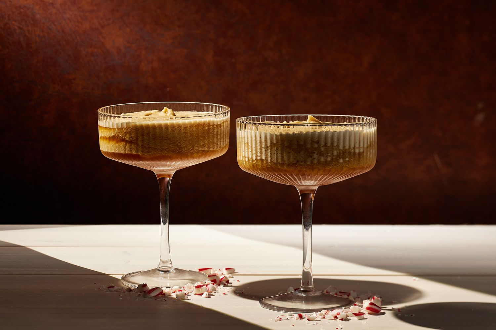
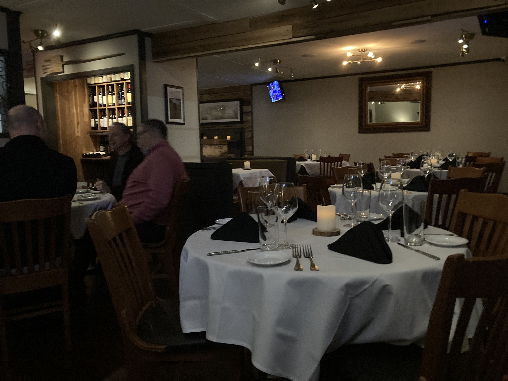
Come see it in person.
Oaklawn Southern Dining is at 1008 E Wood Street in Paris, Tennessee. Dinner begins at 4:30 PM Monday through Saturday, with the bourbon and wine bar opening at 4 PM. Reservations are highly recommended.